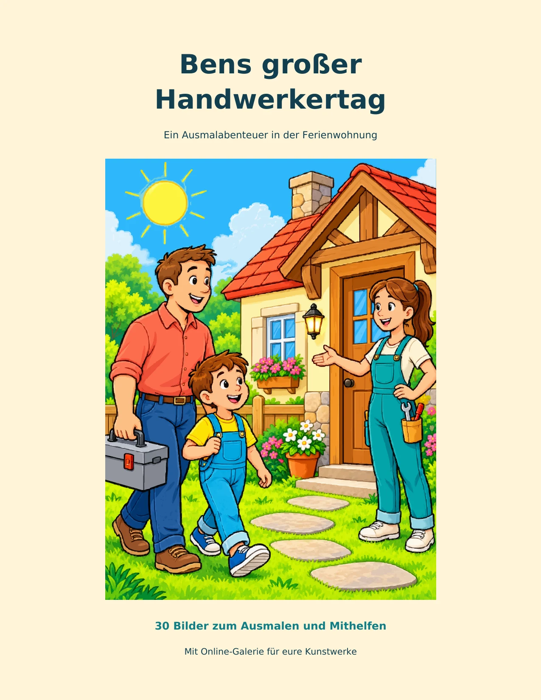
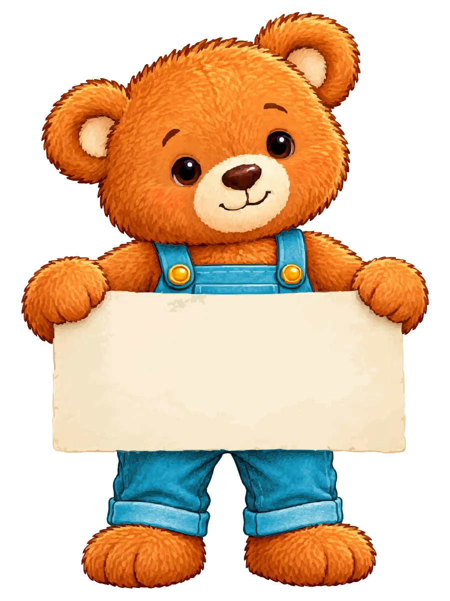

Ausmalbuch · Band 1
Bens großer Handwerkertag
Ein Ausmalabenteuer in der Ferienwohnung
von Paul Spieker
Ein Stuhl wackelt, der Wasserhahn tropft, und an der Wand fehlt noch ein Regal. Ben hilft Papa und Handwerkerin Mia, die Ferienwohnung wieder herzurichten.
Gemessen, gesägt, geschraubt und gestrichen wird gemeinsam – und zwischendurch gibt es Apfelschnitze. Am Ende bekommt Ben einen Helfer-Stern. Die 30 Bilder erzählen dabei zusammen eine Geschichte: Jedes Motiv führt den Tag ein Stück weiter.
- Ausmalmotive30
- Buchseiten64
- Altersempfehlung5 bis 8 Jahre
- AutorPaul Spieker
Externer Link. Öffnet amazon.de in einem neuen Tab.
Im Entwurf ist noch kein Produktlink hinterlegt.
Innenseiten
Ein Blick ins Buch
Klare schwarze Konturen, großzügige Flächen und Motive, die gut erkennbar sind.

Mitmachen
Dein Bild gehört in die Galerie.
Hast du eine Seite aus diesem Buch ausgemalt? Lass dein Bild von einem Erwachsenen fotografieren und an uns schicken. Nach unserer Prüfung hängt es in der Bildergalerie.